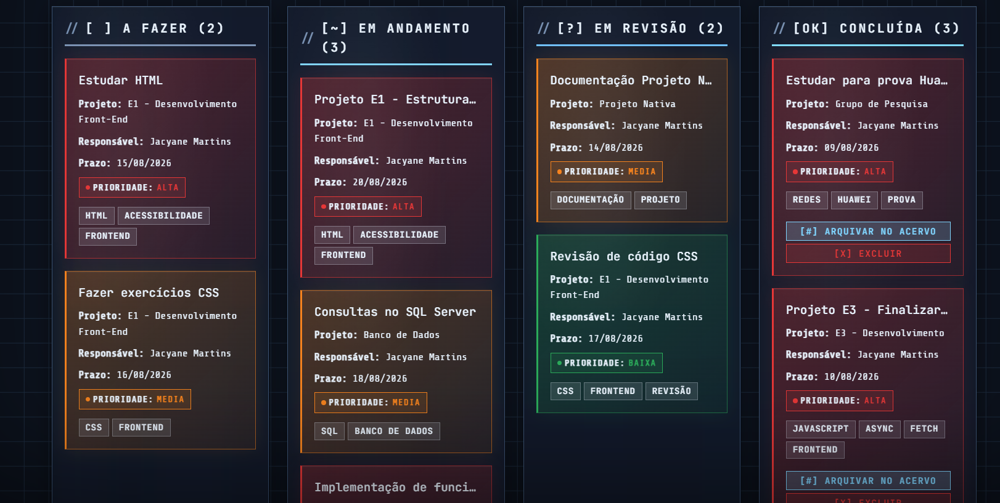
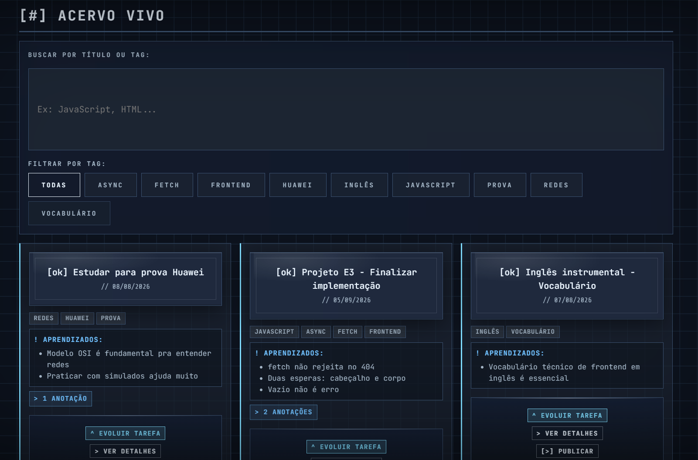
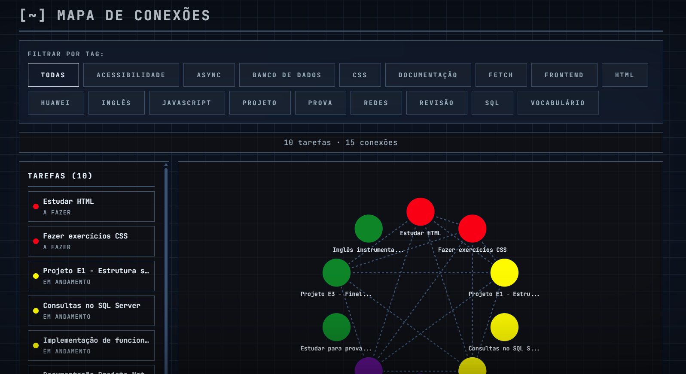
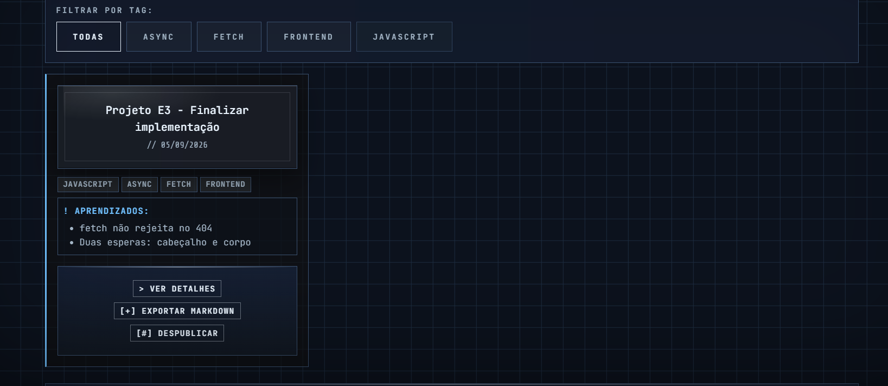

// Propósito
O S.T.E.P — Simple Task Execution Platform é um gerenciador de tarefas acadêmicas que não descarta o que foi feito. Cada tarefa concluída vira conhecimento vivo, conectado e compartilhável.
A ideia central é o Canivete Suíço: uma ferramenta, várias lâminas. Cada modo serve um propósito diferente, mas todos trabalham sobre o mesmo estado.
// Capturas



